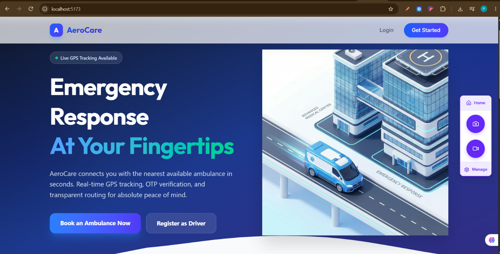
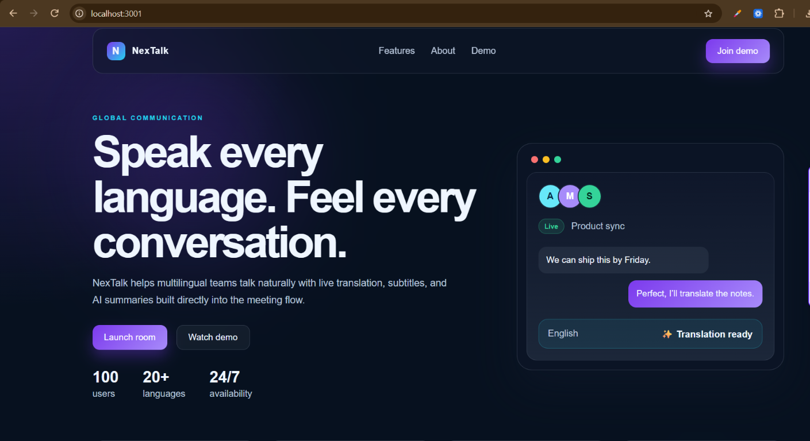
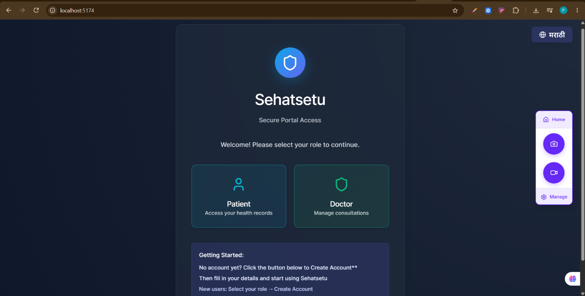

Graphic designer · UI/UX enthusiast
Making ideas
feel unforgettable.
Hi, I’m Prerna — a designer who loves turning thoughtful ideas into clear, expressive visuals and easy-to-use digital experiences.

A little about me
Design with purpose.
Made to connect.
I’m an MCA student and aspiring graphic designer with hands-on experience creating social media designs in Figma. I’m drawn to the details that make a design work: thoughtful composition, expressive typography, considered color, and a clear message.
Alongside graphic design, I explore UI/UX and front-end development. That mix helps me think beyond how something looks and focus on how people understand and use it.
Master of Computer Applications · 2025–2027
Project I built
Thoughtful work,
built around people.

Service design · Healthcare
Ambulance Booking System
A clear, reassuring emergency-response experience designed to help patients get support quickly.

UI/UX · Accessibility
NexTalk
An inclusive video-calling concept that helps people connect across languages with confidence.

Product design · Social impact
Rural Health Connect
A three-portal healthcare experience designed to make essential services more approachable for rural communities.
Each project began with a simple question: how can this feel clearer, kinder, and easier to use?
My creative toolkit
Good ideas, meet
the right tools.
Visual design
Graphic design, typography, color theory, layout, brand consistency, social media creatives
UI/UX & prototyping
Figma, Canva, wireframing, prototyping, user flows, information architecture, accessibility basics
Tools & technology
Photoshop, Illustrator, InDesign, Premiere Pro, HTML, CSS, React, Tailwind CSS
Where I’ve been creating
Learning by
making things.
Freelance experience
Figma Designer Assistant
Assisted a freelancer with Instagram posts and social media designs using Figma. Worked on visual layouts, text placement, and design elements to create engaging posts while building a foundation in UI design and visual communication.
A few milestones
Always curious.
Always growing.
Master of Computer Applications
Bharati Vidyapeeth Institute of Management and Information Technology
Bachelor of Computer Application
Nagpur University · CGPA 8.00
Cloud computing · Python data structures · AI virtual experience
NPTEL, Coursera, and Cognizant
GirlScript Summer of Code
Open source contributor, collaborating and learning with developer communities
Have a good one in mind?